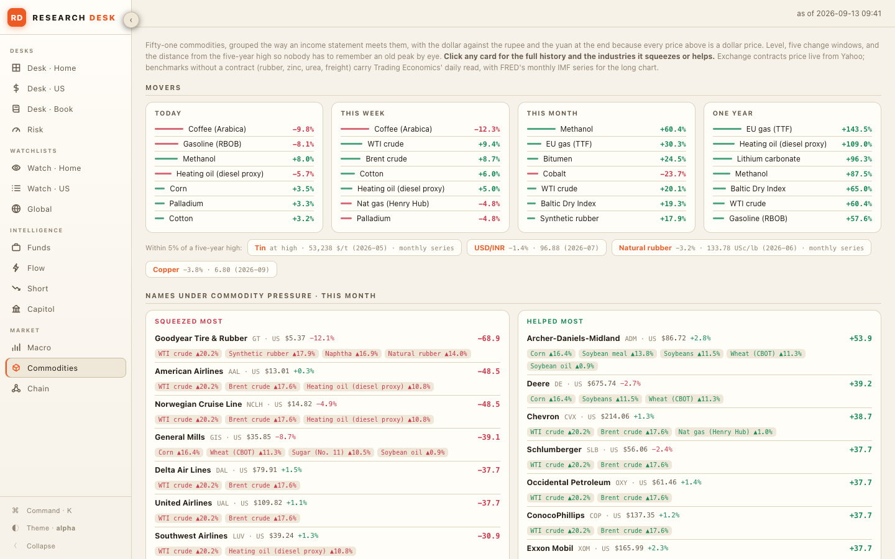
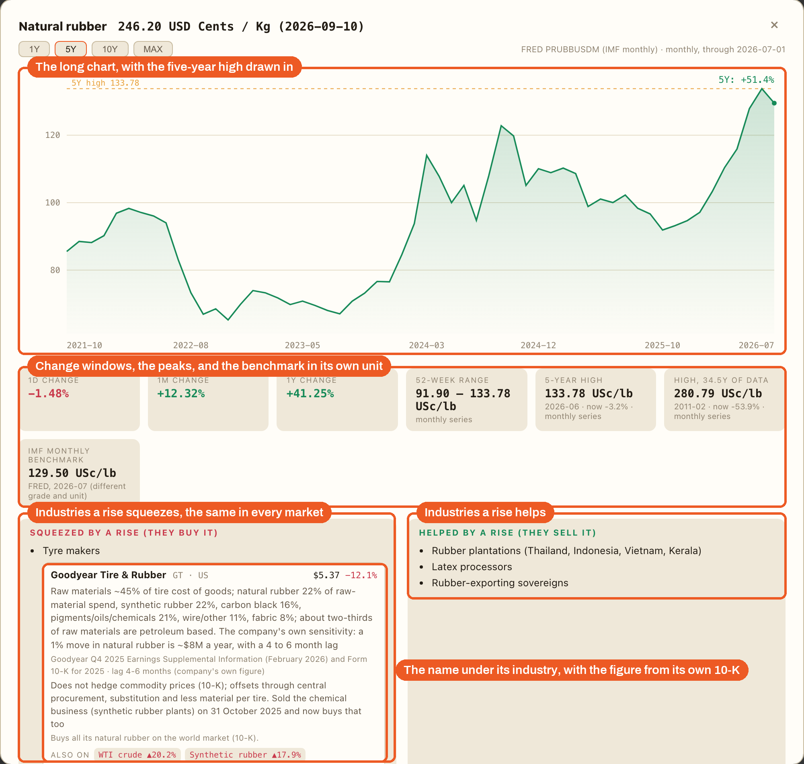
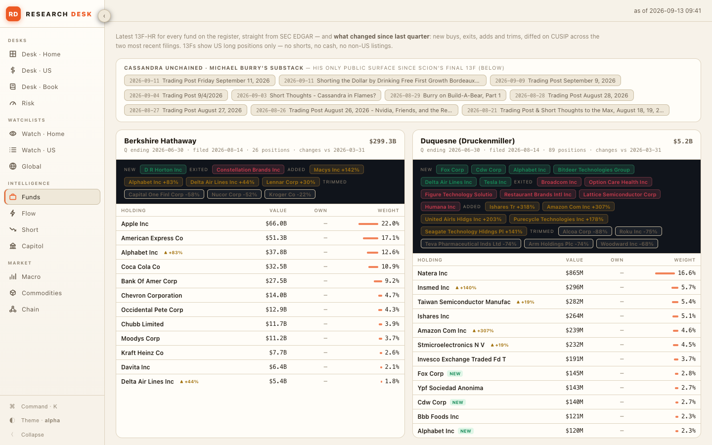
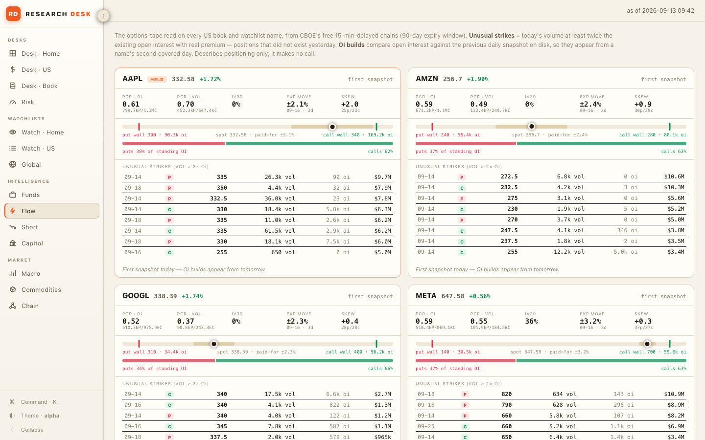
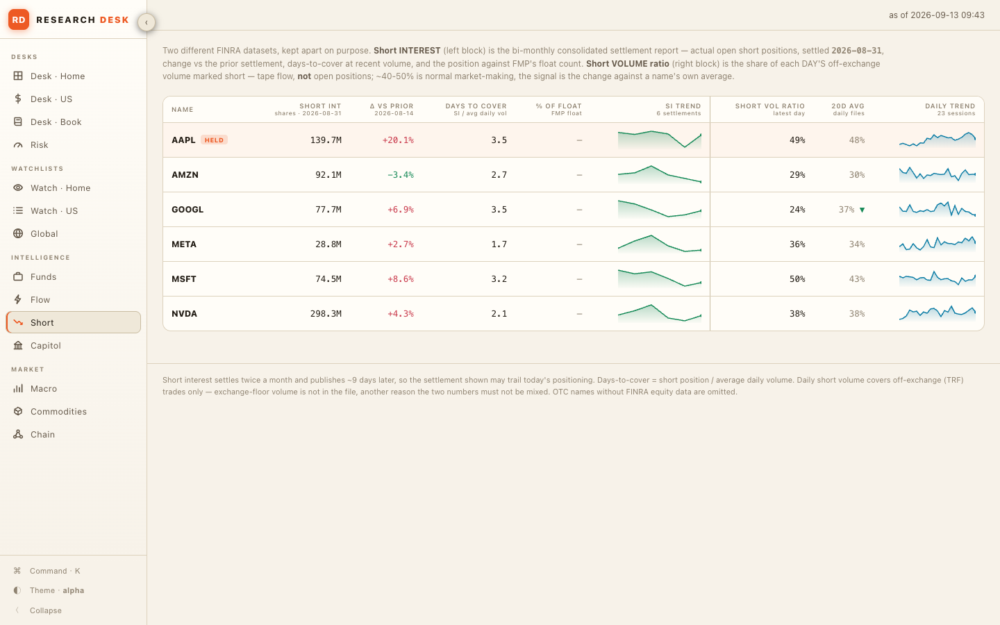
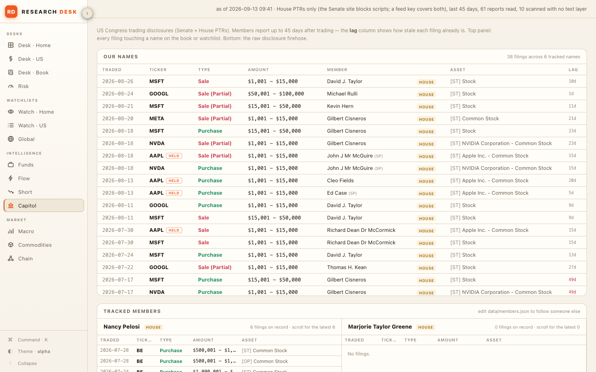
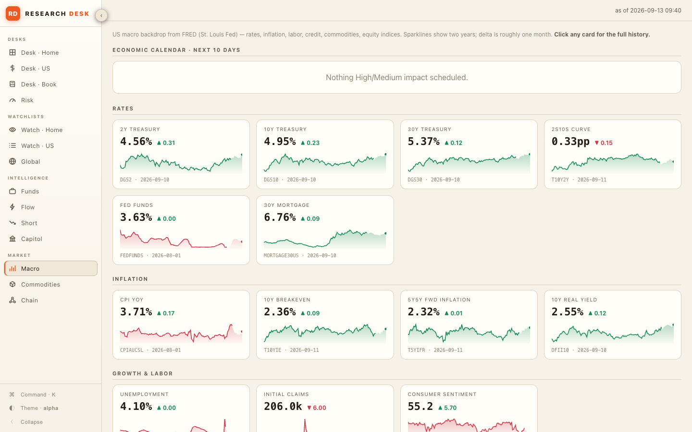

Open source, runs on your machine, your keys stay with you. Fourteen screens: your positions, the filings, the 13F and insider trades, the options tape, short interest, macro, a commodity board that names the industries each move squeezes or helps, and a page for any ticker, priced live. One pasted line installs it in about a minute, an AI coding agent changes it when you ask, and you do not write a line of it. It is the same desk we use every day, published without our positions.

Every screen reads the public record or your own broker, and every number on it traces to the source named on the screen. These are the screens as they come out of the download, with no keys added.






Also on the desk: Desk · US with your US book, the earnings countdown and the insider tape from Form 4 filings; Desk · Book for a portfolio you keep by hand with no broker at all; Desk · Home for a broker account in your own market; Risk; three watch grids; Chain, a value-chain map priced live; and a page for any ticker with the chart, valuation, quality, insiders and, with a feed key, six years of statements and a DCF sandbox. The README describes each one.
There are three ways in, and most readers take the first one: paste one line, and about a minute later the desk is open in your browser and set to start with your computer.
Press Command and Space together, type Terminal, press Enter. A plain window opens. Paste the line below into it and press Enter.
Press the Windows key, type PowerShell, press Enter. Paste the line below and press Enter.
The line finds Python on your computer, installs it if it is missing, downloads the desk into a folder called GreekSoup in your home folder, installs what it needs into that folder and nothing else, sets the desk to start with your computer, starts it, and opens it at http://localhost:8765. Linux works with the Mac line.
Keys are optional. When you want one, the Settings screen inside the desk takes it and keeps it in a file in that folder; you never open the file. The Windows line was written from Microsoft's documented commands and has not been run on a Windows machine by us yet; if it complains, paste the window's text to an AI agent. Desktop apps that install with a double-click are a later release.
Download the ZIP, double-click it, and drag the folder that appears into Documents. That folder is the desk.
Download the ZIPClaude Code, Codex, Kimi Code or Grok Build, whichever you use. The Claude desktop app has a Code section that asks which folder to work in; choose the desk folder. If you have none yet, search "how do I install Claude Code" and follow the two or three steps.
The agent installs what it needs, asks for your keys one at a time and tells you where each comes from, starts the desk, sets it to start with your computer, and gives you the address to open. Say you have no broker and no feed key and it still runs twelve of the fourteen screens.
The desk opens at http://localhost:8765, which is your own computer talking to itself; nobody else on the internet can open it. If anything goes wrong at any step, give your agent the README and describe the problem in your own words. That is the same method that built the desk.
For the reader who wants to see what the agent does, or do it by hand.
One Python file serves the fourteen pages, the lists you edit are plain JSON in data/, and everything specific to the shipped broker sits in a short list of files, so adapting it to your own broker is a matter of rewriting those from your broker's API documentation. The file map, the data sources and how the update works are in TECHNICAL.md.
Once a day the desk looks at GitHub. When a newer version exists, a strip appears at the top of every screen with the date and what changed, and one button.
Click it and the desk brings the new version in, keeps your keys and every list in your data folder exactly as they are, adds any new list or alert rule, keeps any file your agent changed for you (a rewritten broker adapter, say) and names it so you can ask the agent to merge the changes, then restarts by itself. It takes under a minute. If you would rather not click at all, switch on Newer versions on the desk's Settings screen and it brings a new version in the day it appears. A copy from before 13 September 2026 does not have the strip yet; the README has the one paste that brings it up to date, and from then on the desk tells you itself.
The desk is built to fetch whatever it can from the free public record before it asks for a key. With no broker key and no feed key it still starts.
Two files ship inside the folder, and the edition that walks through every screen and the build is on the newsletter.
What was added and when. This list is read from the desk's own version file on GitHub, so it is the same list your desk reads when it checks for an update.
Read from VERSION on GitHub.